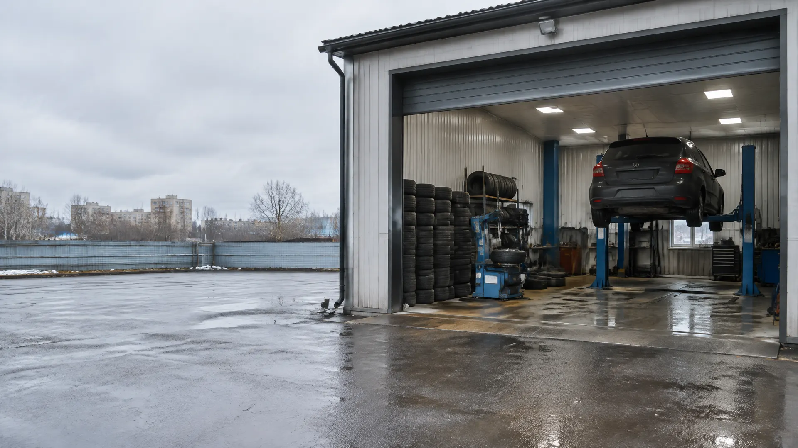
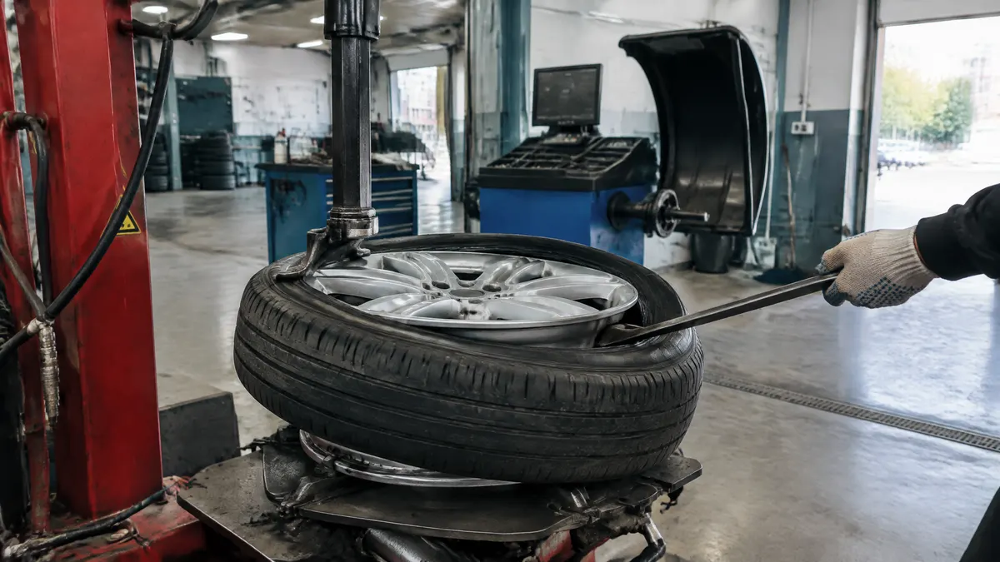
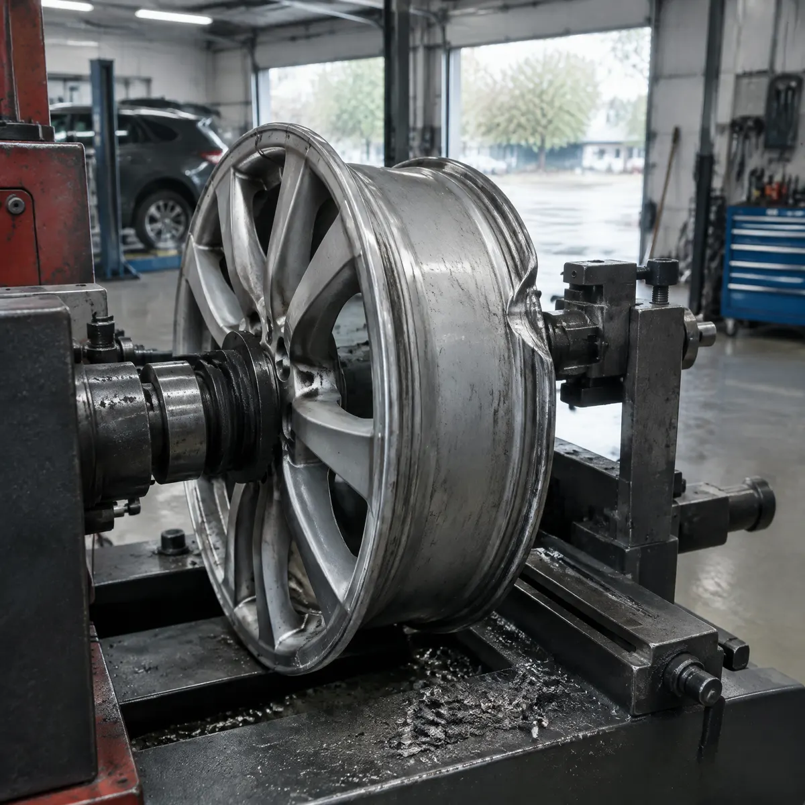
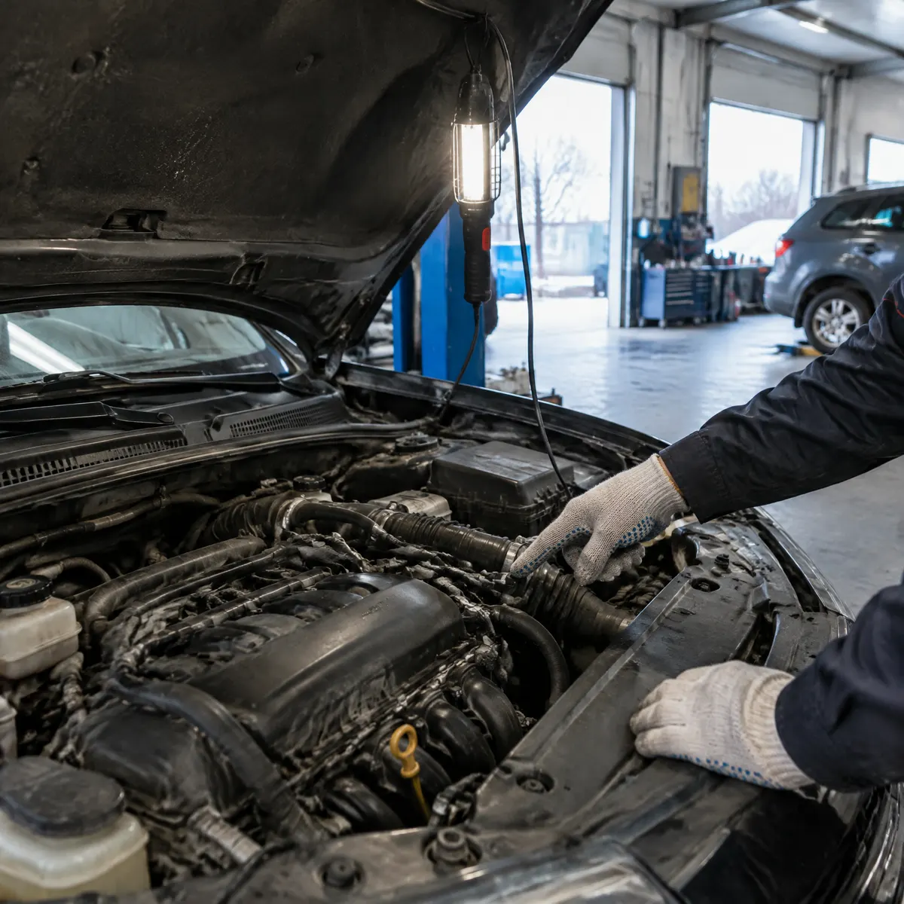

Автосервис и шиномонтаж · Ижевск, Салютовская, 55а
Автосервис и шиномонтаж в Ижевске – объясняем и показываем
Ремонт и обслуживание, замена колодок, шиномонтаж, сварка и правка дисков, ремонт порезов, ошиповка, б/у шины. Запчасти заказываем сами. Каждый день с 9 до 20.
- Рейтинг 4,8 в 2ГИС
- Без выходных, 9:00–20:00
- Запчасти заказываем сами

Что делаем
Стоимость назовём при записи – по марке машины и размеру колёс.
Ремонт
- Диагностика и ремонтуточнить
- Замена маслауточнить
- Замена колодокуточнить
- Подбор и заказ запчастейуточнить
Шины и диски
- Шиномонтажуточнить
- Сварка и правка дисковуточнить
- Ремонт порезовуточнить
- Ошиповка, б/у шиныуточнить
Как проходит ремонт
- 01
Пишете, что случилось
Выберите день и время в форме.
- 02
Смотрим и объясняем
Показываем, что не так и что нужно менять.
- 03
Заказываем и ремонтируем
Нужные запчасти находим сами.
- 04
Забираете машину
Оплата картой, наличными, переводом или по QR.



Что пишут клиенты
Ездят годами
«Уже несколько лет и третью машину там ремонтирую» – из отзыва.
Объясняют и показывают
Клиенты отмечают, что всё объясняют до ремонта.
Выручат без записи
«Хоть приехал и без записи, нашлось для меня время».
В оговорённый срок
«Сделали все в оговоренные сроки».
Отзывы в 2ГИС
«Обалденный автосервис. Уже несколько лет и третью машину там ремонтирую»
Житель Ижевска · 19 августа 2025
«Спасибо ребятам, выручили с прикипевшими болтами, хоть приехал и без записи, нашлось для меня время! Желаю развития и только позитива»
Олег Кошевой · 25 августа 2025
«Обслуживание на уровне, приняли без очереди, сделали все в оговоренные сроки. Рекомендую.»
Наташа К · 22 апреля 2025
Отзывы с карточки в 2ГИС, без правок.
Запишитесь в сервис
- Адрес
- Ижевск, Салютовская улица, 55а, Ижевске
- Часы
- Ежедневно 9:00–20:00
- Телефон
- +7 (950) 825-74-30